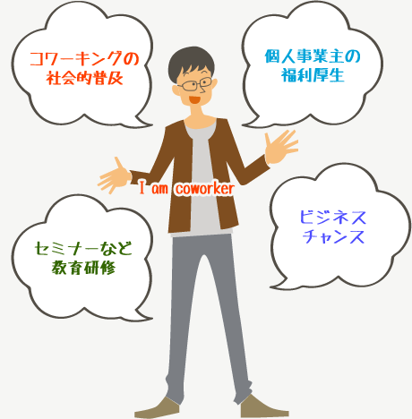
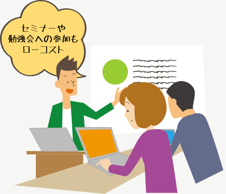
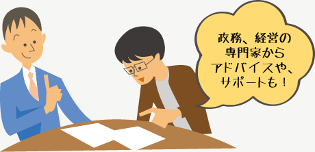

Aboutコワーキング協同組合について
組合についてコワーキング協同組合の目的とメリット
協同組合の目的
コワーキングを広く社会に普及させ、働き方、暮らしに全国の小ワーカーに利する事業を行います。
2006年頃からサンフランシスコを中心に始まったワーキング・スタイルであり、主にフリーランス（個人事業者）およびスモールカンパニー（小規模法人）が、オープンなワークスペースを共用し、各自が自分の仕事をしながらも、自由にコミュニケーションを図ることで情報や知見を共有し、協業パートナーを見つけ、互いに貢献しあう「ワーキング・コミュニティ」の概念およびそのスペースを指します。

協同組合のメリット
コワーキング協同組合は国や、行政から認可を受ける法人なので社会的信頼度が高いです。
- ・中小企業・個人事業者を保護育成する法律に基づいて設立される法人なので国のバックアップを得られる
- ・認可法人である組合として官公庁や大手企業のプロジェクトに参加する可能性を広げる
- ・各自得意分野を持つ組合員でプロジェクトチームを編成し共同で案件を受託できる
- ・各種の教育研修事業を行い、組合員に無料もしくはローコストで提供する
組合に加入することで、組合主催のセミナー・教育研修などローコストで参加することができます。
- ・また組合員のための情報ネットワークシステムを活用できる。
- ・仕事に必要なソフトやサービスを、共同発注・購買することで割安に導入できる

税務・会計・経営・情報化などの専門家のサポートも受けられます。
- ・起業や収益構造改善のための情報共有に参加できる
- ・福利厚生メニューを整備し、豊かな生活を実現する
コワーキング協同組合は、その事業展開により組合員に対して、たとえば下記のようなメリットを提供します。

協同組合のメリット
- ・組合員による共同受託開発・制作
- ・組合員による共同購買・発注・委託
- ・組合員のための教育研修事業
- ・組合員のための情報提供・共有システムの運営
- ・組合員のための福利厚生事業
- ・全国各地域におけるコワーキング開設・運営支援事業